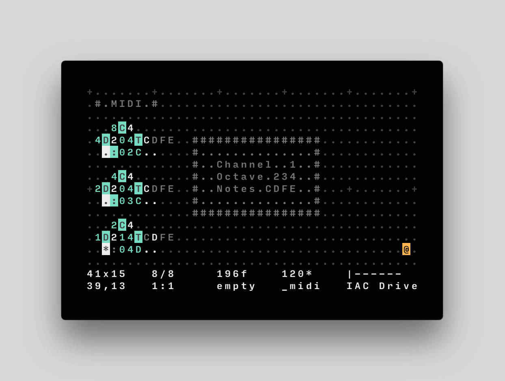

NICK LEVANTIS
*About *Songs *Blog
---
date: "01/04/2020"
title:"Orca"
---

-My new favorite music sequencer is Orca. Designed
by Devine Lu Linvega (Hundred Rabbits) and is a
ingenious approach that really takes every
music idea to another level. Orca is an esoteric
programming language,designed to create procedural
sequencers in which each letter of the alphabet is
an operation, where lowercase letters operate on
bang, uppercase letters operate on each frame.
The application is not a synthesizer, but a
flexible livecoding environment capable of
sending MIDI, OSC & UDP to your audio interface
like Ableton, Renoise,VCV Rack or SuperCollider.
You can also use Pilot, a companion application
to ORCA.
---------> Svbtle ---> Youtube ---> Soundcloud